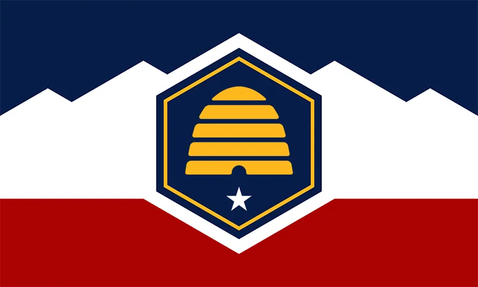

About Me
My name is Wynter. Yes like the season but Utahified (if you know you know). Fun fact I was actually born in the Summer time unlike what many assume. Another thing about me is I am a big fan of doing reasearch and learning in general. I am so glad I have been born in the Information Age where I can learn just about anything I want to if I put my mind to it.
Fun Facts about UT
Utah, known for its stunning landscapes and unique cultural heritage. It is home to five national parks, aptly nicknamed the "Mighty Five". It also boasts the highest literacy rate in the United States and is famous for having the largest population of Mormons in the country. Notably, the Great Salt Lake, covering an area of around 1,700 square miles, is even saltier than the ocean, making it a unique natural wonder. Additionally, Utah hosted the 2002 Winter Olympics, leaving behind a legacy of world-class winter sports facilities.
